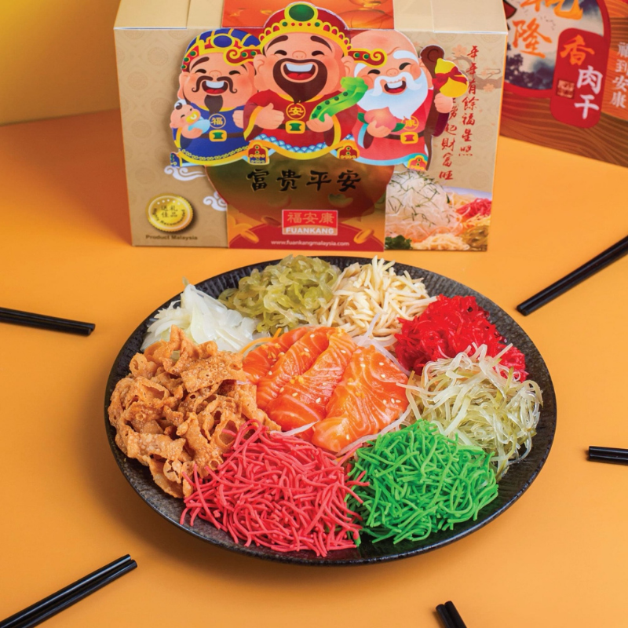
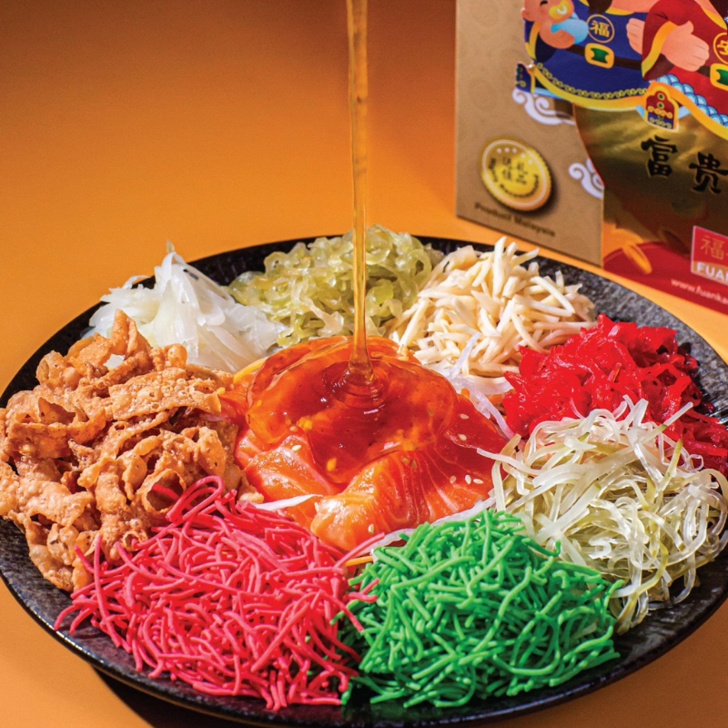
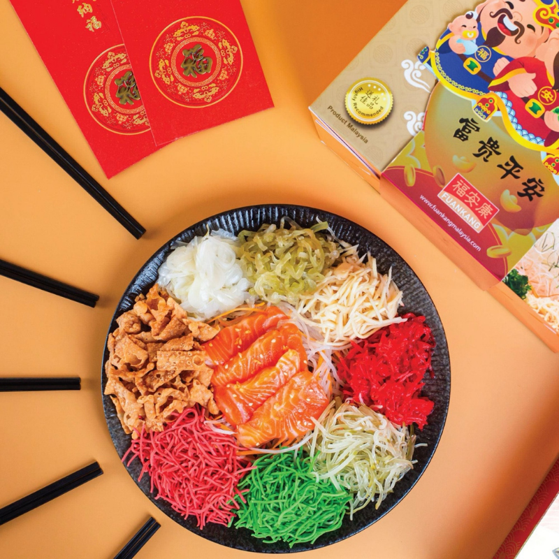
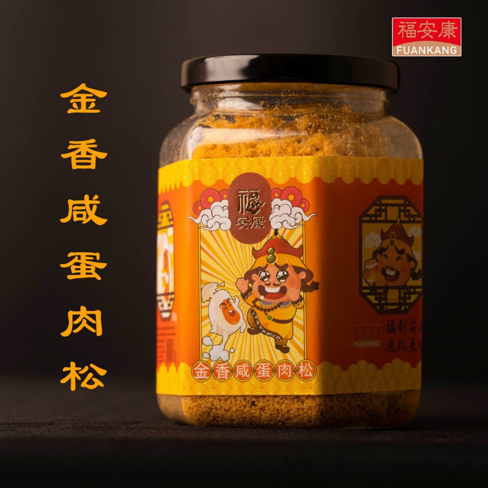
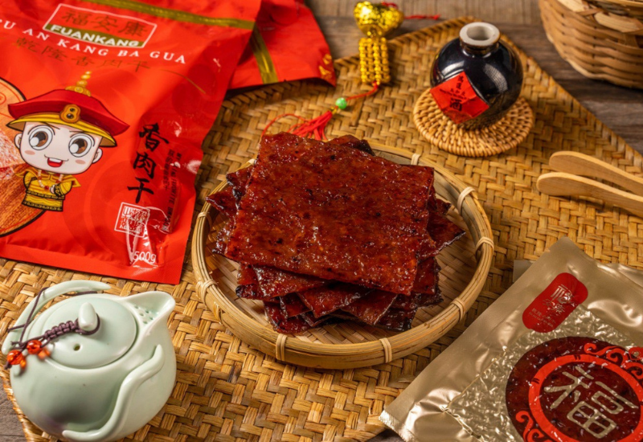
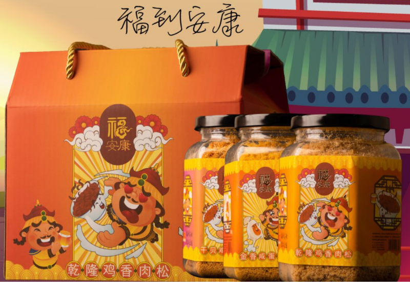
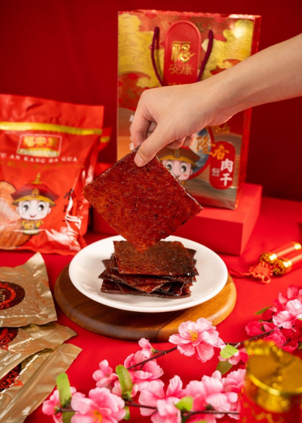
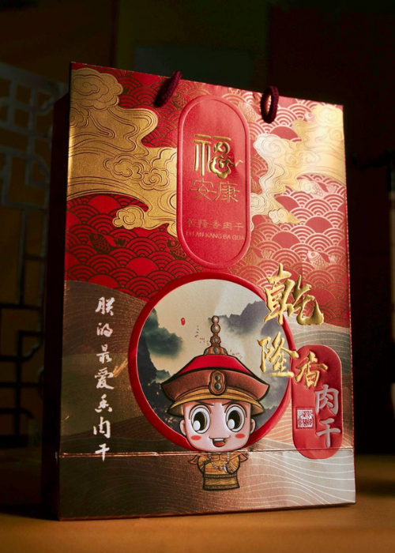
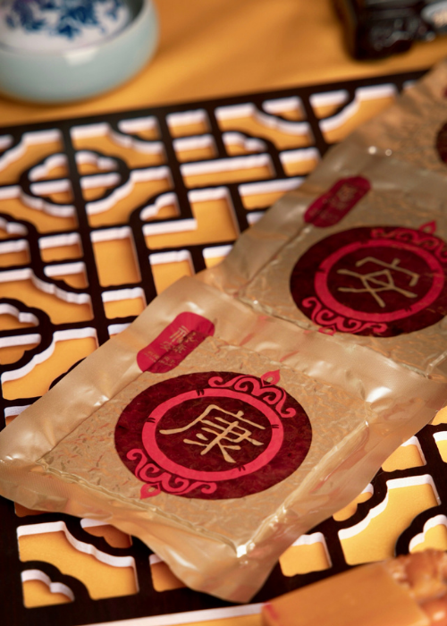

🧧 品牌 · 食品 · 全职能总裁
福安康
食品品牌
Fuan Kang Foods — 农历新年季节性品牌
在母公司旗下全权负责一个农历新年食品品牌——从供应链到货架陈列。这是一次真实检验：独自一人跨越每一个职能部门意味着什么。
背景
一个品牌。五条产品线。一个人全权负责。
在 Evoluc Marketing 旗下，我全权接管了福安康食品——一个涵盖肉干、坚果与蜜饯、肉松饼及祭品的农历新年食品品牌。我作为 CEO 的职责不只是制定战略，而是字面意义上的「什么都管」：采购、库存、财务、销售与渠道配送协调，一人全揽。
没有大团队，没有分工协作。这是一场精益运营——整整一年，我每天身兼数职。
品牌概况
一站式农历新年购物——5 条产品线，一个品牌
品牌定位：品质保证、价格亲民、农历新年一站购齐。我们不与百年老字号比拼声誉，而是以多样性与可靠性在同一品牌下胜出。
一站式的吸引力是真实存在的。但 5 条产品线也意味着没有任何一款产品能成为爆款——资源分散，缺乏一个能驱动品牌记忆的明星 SKU。
产品摄影










全面运营
「食品品牌 CEO」的真实日常
这不是一个策略岗位，而是深入一线的实操运营。我管理着支撑一个实体产品品牌运转所需的每一项职能。
📦
采购与供应链
与多家供应商就价格、品质标准和交货期进行谈判。在农历新年前 1–2 个月协调季节性大批量采购。
🏭
库存管理
管理入库与出库存货、与 Evoluc 系统的仓储协调，以及需求预测，避免淡季过度备货。
📊
财务核算
跟踪各产品线的销货成本、销售收入与利润率。每月与母公司进行对账。每一笔资金进出均有记录。
🚚
B2B 配送渠道
主要渠道为 Evoluc 的经销商网络。协调代理商订单、交货排期与渠道支持。无直接面向消费者的渠道。
包装与推广物料




季节性困局
12 个月的运营，2 个月的销售。
农历新年食品品牌靠季节性爆发生存。运营福安康的现实：两个月的旺盛需求（一月至二月），随后是几乎全年的沉寂。这不是理论——它影响着从采购到现金流的每一个决策。
1
季节性天花板——没有知名品牌光环，无法扩大农历新年品类本身的市场规模。
2
纯 B2B 渠道——没有直达消费者（D2C）的渠道，意味着无法积累品牌资产。
3
5 条 SKU 过于分散——精力稀释，没有一款明星产品能锚定品牌记忆。
4
多线并行——在 Evoluc 旗下，我无法将全部精力投入福安康，它只是众多项目之一。
项目结局
不是崩塌，而是悄然淡出。
福安康食品并没有戏剧性地失败，它只是……逐渐失去了关注。随着 Evoluc 战略重心转移，其他项目（最终是 Heewon APP）占用了更多资源，食品品牌被悄然降级。
没有明确的关停时刻——只是时间、投入与精力的逐步撤退。这门生意收回了成本，没有造成重大亏损。这是一次温和而平静的退出。
客观评估
销售成绩平平——足以维持运营，却不足以称之为成功。真正的问题不在于执行，而在于商业模式本身。一个季节性 B2B 品牌，没有社交媒体存在感、没有明星产品、没有专注的资源投入，无论运营多好，结构上都存在天花板。
学到了什么
全职能独立运营，是策略岗位永远给不了你的历练。
✓ 我建立的能力
端到端产品运营：采购 → 库存 → 财务 → 销售
✗ 缺失的关键
没有品牌差异化——在没有独特价值主张的同质化品类中竞争
没有 D2C 渠道——纯 B2B 意味着无法积累消费者层面的品牌资产
精力分散——同期并行 5+ 个 Evoluc 项目
「季节性产品有一道难以突破的天花板，除非你是积淀深厚的老字号。正确的第一步，应该是选定一款产品、深耕下去、围绕它打造一个有故事的品牌，先赢得 D2C，再考虑渠道扩张。我们做反了——代价是被人遗忘。」